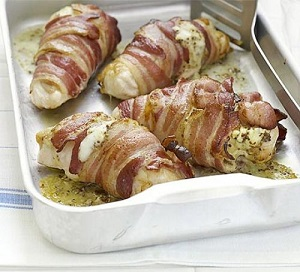

Heat oven to 200C/fan 180C/gas 6. Mix the cheeses and mustard together. Cut a slit into the side of each chicken breast, then stuff with the mustard mixture. Wrap each stuffed chicken breast with 2 bacon rashers – not too tightly, but enough to hold the chicken together. Season, place on a baking sheet and roast for 20-25 mins.
Cheesy baked mushrooms: Heat oven to 180C/fan 160C/gas 4. Mix the mozzarella and cheddar with 1 tbsp pesto, then spoon into the hollows of 4 portobello mushrooms. Place on a baking tray and roast for 15 mins or until the mushrooms are softened and the cheese is bubbling.